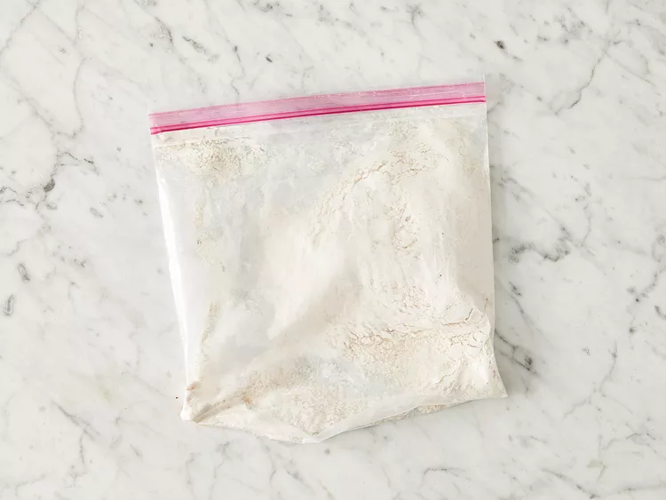

Crispy Fried Chicken

This is the only crispy fried chicken recipe you'll ever need. Guess why?
Because it combines all the tried-and-true tricks to ensure the juiciest, most flavorful, crispiest chicken every time.
Summary of the recipe
Nutritional Facts (per serving)
What Makes This Fried Chicken So Crispy?
There are a few reasons this crispy fried chicken works so well:
- Allowing the buttermilk-flour mixture to come to a paste-like consistency is key to a crispiness on the outside and juiciness on the inside.
- Most fried chicken is cooked at a high temperature throughout the frying process. This one, however, only starts at a very high heat — after browning, the heat is reduced for about 30 minutes. You'll turn up the temperature again at the end, locking in that crispy texture.
- Paprika adds smoky flavor and has a low smoke point, which helps with browning the chicken.
Ingredients
- 1 (4 pound) chicken, cut into pieces
- 1 cup buttermilk
- 2 cups all-purpose flour for coating
- salt and pepper to taste
- 2 quarts vegetable oil for frying
Directions
- Take your cut up chicken pieces and skin them if you prefer.
- Put the flour in a large plastic bag (let the amount of chicken you are cooking dictate the amount of flour you use). Season the flour with paprika, salt and pepper to taste (paprika helps to brown the chicken).

- Dip chicken pieces in buttermilk then, a few at a time, put them in the bag with the flour, seal the bag and shake to coat well.
- Place the coated chicken on a cookie sheet or tray, and cover with a clean dish towel or waxed paper. SIT UNTIL THE FLOUR IS OF A PASTE-LIKE CONSISTENCY. THIS IS CRUCIAL!

- Fill a large skillet (cast iron is best) about 1/3 to 1/2 full with vegetable oil. Heat until VERY hot.
- Put in as many chicken pieces as the skillet can hold. Brown the chicken in HOT oil on both sides.

- When browned, reduce heat and cover skillet; let cook for 30 minutes (the chicken will be cooked through but not crispy). Remove cover, raise heat again, and continue to fry until crispy.
- Drain the fried chicken on paper towels. Depending on how much chicken you have, you may have to fry in a few shifts. Keep the finished chicken in a slightly warm oven while preparing the rest.

Editor's Note:
We have determined the nutritional value of oil for frying based on a retention value of 10% after cooking. The exact amount may vary depending on cook time and temperature, ingredient density, and the specific type of oil used.